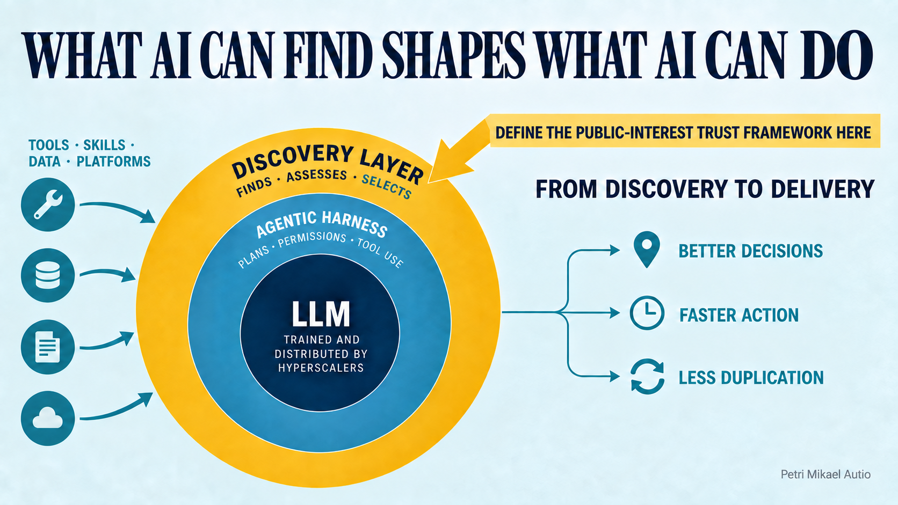

From a Prompt to an Operational System
Suppose a climate-change-induced flood hits a rural district hard in the Himalayas, and a local government officer wants to map out a response plan based on the latest satellite data and best available rapid flood-modelling tools as soon as possible. How can they achieve a good result quickly? Or take a district-wide programme to operationalise chlorine monitoring in all of the district’s schools in a low-resource region. What would be an effective way to go about this in today’s world?
For the first case, imagine that a person used to solving many daily problems with AI simply goes to their tool of choice and creates a good prompt. The AI agent could then understand the problem, ask for clarifications if needed, seek out up-to-date satellite data, fetch an open-source code repository containing a locally runnable flood-modelling tool, run it with the fresh inputs, produce a map and overlay it with water, sanitation and community information from a platform such as mWater. It would still need to surface uncertainties, check that the data and model are suitable for the local context, and leave consequential judgements with the responsible people. But the best available open-source data, academic science and ground-truthed infrastructure information could then be combined into a reviewable, actionable plan, complete with a prioritised list of response targets, in record time.
For the second, instead of the human user spending time assessing platforms and learning their ins and outs, an effective AI agent could discover the Solstice MCP server, find existing public data or ingest data from elsewhere, design surveys and workflows drawing on successful existing ones, customise them to the context, and propose user accounts and a suitable permissions structure for approval. It could then help the district focus on onboarding schools and making the process as frictionless as possible. Drawing on the solid data models of a well-established platform and its extensive capabilities, the district officer could build a whole operational management system in hours or days, while retaining responsibility for institutional decisions, data protection and the realities of adoption.
Google says that AI Overviews alone now reach more than 2.5 billion users each month, and the numbers continue to rise fast.1 The scenarios above will become increasingly feasible in the near-term future. But they depend on AIs knowing how to leverage existing platforms and their capabilities to their best effect, not to mention how to draw from the near-graveyard of fantastically capable but obscure open-source tools and inert data repositories.
How do we teach AI these things? When your Claude or Codex starts grasping for tools to help solve a problem in a crisis, when a flood is underway or landslides have just settled, how does it find a well-supported and contextually appropriate tool instead of settling for something subpar or confidently coding a less-than-ideal solution on the spot? More broadly, where does power sit as people become accustomed to having AIs and agents do their work for them?
Here I will argue that the tooling layer immediately above large language models is becoming a nexus of power and leverage for humanitarian and development work. A published technical foundation for discovery now exists. What remains open is the trust framework: the criteria by which registries and agents decide whether a resource is appropriate for a public-interest task. Humanitarian and public-sector actors should define that framework before enterprise compliance and popularity become the defaults.
The way we interact with software is changing, albeit at different speeds in different contexts and from one individual to another.
Making Good Work Legible to AI
In the public forum, we no longer write only for humans. If you have
built a great flood-modelling tool, write its
documentation so that it can be discovered and understood by AI. If you
maintain a scalable software platform, it is better to overcommunicate
than undercommunicate its capabilities: AIs can parse far more
information than most prospective human users will ever read. An
llms.txt file pointing tools that support the convention
towards authoritative material is one low-cost experiment, not a
guarantee of indexing or preferential treatment.2
The next step is to make tools themselves discoverable. Agentic Resource Discovery, or ARD, was published in June 2026 by an industry working group with contributors from Google, Microsoft, Hugging Face and other major technology companies. It is licensed under Apache 2.0 and builds on the Linux Foundation AI Catalog data model.3 Google’s Agent Registry in Gemini Enterprise implements the approach, while Hugging Face’s Discover Tool provides a working reference implementation that searches skills and MCP servers.4
ARD provides a common way to publish, index and search resources such
as tools, skills, APIs, MCP servers and specialised agents. Its current
specification uses /.well-known/ard.json; earlier
implementations and the underlying catalogue convention use
/.well-known/ai-catalog.json, so publishers may need to
support both during the transition. More important than the filename are
the entries themselves. Each should include representative
natural-language queries describing the tasks it can serve, because
registries use those examples to build semantic rankings. Writing them
well may determine whether a resource is returned at all.4
For organisations such as Solstice and mWater that are widely used globally, including at government level, this creates an opportunity. They can publish catalogues that make their platforms and preferred methods of using them easy for agents to discover. Over time, they can also support registries that distinguish well-maintained, institutionally supported workflows from merely plausible-looking integrations. Good documentation tells an agent how a platform works; a catalogue helps the agent find that platform at the moment it is needed.
Let us think this further. Many good tools are announced at conferences, used during a funded project and then slowly forgotten as the funding ends and their creators move on. The minimum lift is to leave behind clear documentation, stable metadata and a machine-discoverable description of what the tool does, what inputs it needs and where its limitations lie. That alone gives useful work a better chance of being rediscovered. A small investment at the end of a project can extend its practical life far beyond the period in which someone is actively promoting it.
And let us keep pushing beyond individual organisations. Companies such as Google, Microsoft, OpenAI and Anthropic exert enormous influence through the models they train and the systems through which those models are distributed. The global public commons has limited ability to shape that layer directly. The next layer, however, namely the harnesses, catalogues, registries, permissions and selection mechanisms through which AI encounters the outside world, is still being actively formed. It is a layer at which governments, humanitarian organisations, universities and civil-society actors can have considerable influence if they engage early.
I use discovery layer to mean the systems through which an AI finds, assesses and selects external tools, skills, data and platforms. Models sit at the centre; agentic harnesses plan, manage permissions and invoke tools around them; the discovery layer determines which outside capabilities become available in the first place. What AI can find shapes what AI can do.
But discovery standards matter only when an agent, developer or build pipeline actually queries a registry. They do not directly change model training, ordinary web search or an agent environment that has already hard-coded its tools. A public-interest catalogue that is not ingested by vendor connector directories, enterprise registries and other selection channels remains invisible. Distribution into those channels is therefore part of the intervention, not an afterthought.
This extends beyond software tools to the broader discourse around subjects such as climate change. Organisations already invest in making evidence visible to policymakers, journalists and search engines. They must now also consider whether their most important findings, definitions and recommendations can be reliably found, interpreted and cited by AI systems. If authoritative institutions are absent or illegible in this environment, confident summaries built from weaker sources will fill the gap. The sector cannot afford to stand outside this conversation while its knowledge is increasingly mediated through these systems.
Discovery Is a Governance Question

The most immediate failure mode is not necessarily paid placement. It is popularity bias. Semantic discovery will tend to favour resources with abundant English-language documentation, familiar terminology and a large online footprint. Large vendors and GitHub-star-heavy projects can therefore become easier to retrieve than quieter tools with stronger evidence, better local fit or years of field use. A public-interest intervention should correct for that imbalance rather than reproduce it.
The governance challenge is substantial. Someone must decide what is indexed, how resources are ranked, which claims are verified and how unsafe or abandoned tools are handled. Those decisions should not be hidden inside a proprietary recommendation system. A credible humanitarian or public-sector registry would need transparent criteria, plural governance, clear provenance and room for contextual judgement. No catalogue can determine the right tool independently of place, language, institutional capacity and risk. But it can make those factors visible and give both the agent and its human user better grounds for deciding.
ARD already provides the slot in which a stronger public-interest approach can be built. Its optional trust manifest can carry cryptographic identity, provenance, signatures and attestations pointing to compliance evidence. But ARD deliberately does not decide whether those claims check out or what weight they deserve. Signing and verification are delegated to the trust framework named in the manifest, while the registry and client make the actual trust decision. The protocol supplies the envelope; someone still has to define the judgement.7
The opportunity, then, is to define a public-interest trust framework that ARD registries and clients can use. It should extend beyond corporate compliance signals such as SOC 2, HIPAA and GDPR to record maintenance status, evidence behind a tool’s claims, licences, data sovereignty and governance constraints, languages and operating contexts, offline capability, accessibility, known failure modes, security assessments and experience from real deployments. It should distinguish publisher claims from independent assessments, expose how each factor affects ranking, log why a resource was recommended, and allow listings to be corrected or contested.
This layer also needs a threat model. Tool descriptions can carry prompt injection; skills and packages can be poisoned upstream; metadata can be signed yet still describe an unsafe capability. Domain control establishes who published a claim, not whether the resource is secure or suitable. Registries and clients therefore need verification, scanning, constrained invocation and revocation processes alongside richer public-interest evidence.7
There are, then, two broad ways to influence what large models do. One is to shape what they internalise during training and retrieve through ordinary search. This is slow, uncertain and largely controlled elsewhere, but organisations should still make their authoritative knowledge clear and machine-readable. The other is to shape the resources models can discover and use at runtime. That layer is more immediate, more open to intervention and, for operational organisations, potentially more consequential.
A public-interest trust framework alone would not ensure that commercial agents consult it or give its assessments meaningful weight. The political goal should therefore be broader: distribution into the registries and connector directories agents actually use, public-interest assurance and ranking, and procurement or institutional rules requiring publicly funded agents to consult appropriate registries, disclose their sources and explain consequential selections. This would not remove the power of model and agent vendors, but it would make that power more visible and contestable.
The institutional foundation may already exist in more than one place. Solstice Institute maintains libraries designed to turn shared knowledge into operational systems. Its Global Indicator Library combines definitions, references, calculations and tested question sets that users can bring directly into surveys. Environmental datasets, expert workflows and MCP skills also already exist. These are not yet agentic registries, but they embody much of the underlying idea: capturing expert knowledge in structured forms that can be discovered, adapted and put to work.
The roles should remain separate. Solstice Institute could act as an early publisher, adding rich ARD profiles to twenty well-used resources from its libraries, including carefully written representative queries, data requirements, operating contexts and known limitations. An independent registrar or assurer should own verification criteria and judgements about those claims. The Digital Public Goods Alliance’s registry of more than 250 recognised digital public goods, reassessed annually and available through a public API, could provide a complementary route to broader coverage.6 Vendor registries and marketplaces could ingest the resulting profiles and assurance signals, while procurement guidance could require publicly funded agents to consult them and record why a resource was selected.
This is a shorter and more credible path than asking a tool publisher to assess itself or inventing a wholly new institution. Start with twenty profiles, keep publisher and assurer roles distinct, test whether the resources are actually returned for representative tasks, and measure whether the assurance changes selection.
What Organisations Can Do Now
Publish rich ARD profiles: describe the tasks a resource can serve through two to five representative queries, alongside its capabilities and limitations.
Define public-interest trust signals: extend identity and compliance metadata with evidence of field use, maintenance, licensing, data sovereignty, offline operation and local fit.
Document workflows, not just features: detail when and in what context a tool should be deployed so agents can evaluate situational fit.
Create demand and distribution: require publicly funded agents to consult appropriate registries and work with vendor directories so public-interest profiles are actually ingested.
The capability frontier of large language models will continue to advance. Whether models reliably find the best of our accumulated tools and knowledge for a given context is a separate question. The answer will depend, in no small part, on what we make visible to them now, as well as on who governs the systems through which they find it.
The specific next step is to draft a public-interest trust schema for ARD and test it against twenty established digital resources. If you operate a relevant registry, maintain a widely used digital public good or work on procurement rules for publicly funded AI, I would like to hear which criteria and distribution channels such a pilot must include.
Petri Mikael Autio
Head of Product, mWater and Solstice
llms.txtis a community proposal rather than a universally supported standard. See llmstxt.org.↩︎Google Developers Blog, “Announcing the Agentic Resource Discovery specification”, 17 June 2026. The announcement describes Google’s Agent Registry implementation, the Apache 2.0 licence and the specification’s basis in the Linux Foundation AI Catalog data model.↩︎
ARD working group, “Agentic Resource Discovery Specification,” version 0.91; ARD glossary; and Hugging Face,
hf-discover.↩︎Digital Public Goods Alliance, DPG Registry, DPG API, and “DPG Application FAQs”, accessed 20 September 2026. The registry count changes as solutions are added, reassessed or removed.↩︎
ARD working group, “Identity and Trust,” ARD Specification, and ARD FAQ. ARD communicates trust signals; registries and clients verify and weigh them.↩︎